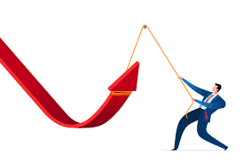
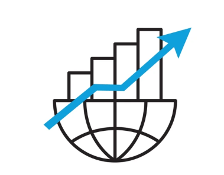

Definición
Es el punto más bajo del ciclo, la economía esta estancada o decrece lentamente.
Características
- Aumento gradual del empleo
- Incremento moderado de la producción
- Mejora en la confianza de consumidores y empresas
Efectos
- Se reactiva el consumo
- Las inversiones comienzan a crecer
- Disminuye el desempleo progresivamente

Definición
Incremento en la producción de bienes y servicios, aumento en empleo, inversiones y consumo.
Características
- Incremento del PIB
- Mayor inversión empresarial
- Crecimiento del crédito y consumo
Efectos
- Mejora de la calidad de vida
- Reducción del desempleo
- Posible aumento de la inflación
Definición
Es el punto más alto de crecimiento dentro del ciclo.
La economía alcanza su máximo nivel de producción y empleo, aunque también presenta inflación elevada.
Características
- Alta producción y consumo
- Nivel de desempleo muy bajo (casi nulo)
- Elevada confianza económica
Efectos
- Riesgo de sobrecalentamiento económico
- Inflación gradual
- Posibles burbujas financieras (aumento del precio de un producto por especulación, no por fundamentos económicos)
Definición
Periodo de caída en la producción, el consumo y la inversión
Características
- Disminución del PIB
- Reducción del consumo e inversión
- Aumento del desempleo
- Disminución de la calidad de vida
Efectos
- Menor actividad empresarial
- Pérdida de confianza económica
Definición
Fase de mayor gravedad, la producción y el empleo mantienen niveles muy bajos durante un periodo prolongado
Características
- Fuerte caída de la producción
- Fuerte caída del PIB
- Alto índice de desempleo sostenido
Efectos
- Empobrecimiento general
- Quiebras de empresas
- Problemas sociales y financieros graves
Referencias
Economía II Política económica y política pública mexicana (Editorial Excelencia Educativa). (2025). Joanna Smith Pratt.